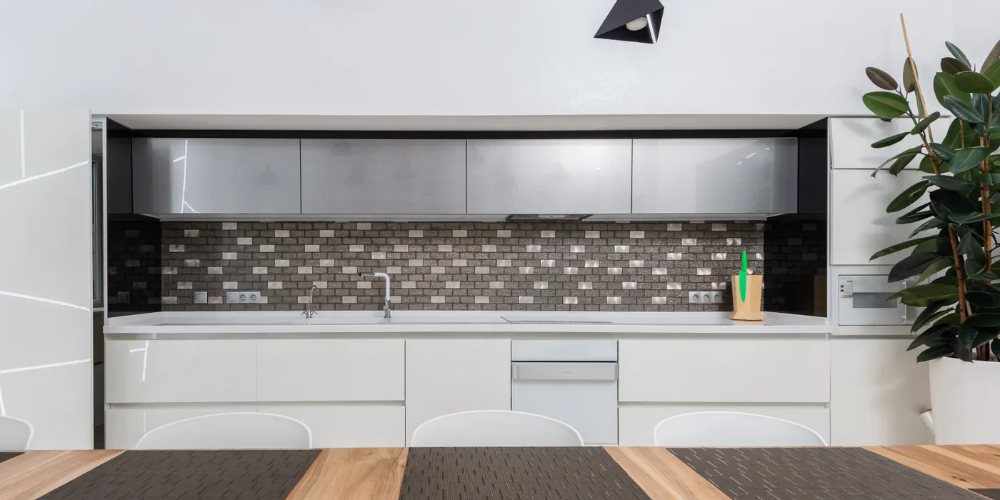
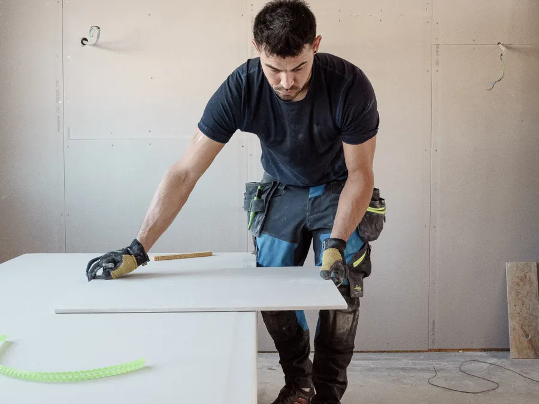

Tjänst · köksrenovering i Stockholm
Kök som passar huset — inte bara katalogen
Vi river, drar ny el, flyttar VVS, reser stommar och monterar bänkskiva och vitvaror. Ett kök på 14 m² på Östermalm landade på 295 000 kr och tog 5 veckor. Efter besiktning lämnar vi fast pris, utan moms.
Fast pris innan vi river, och ett kök du kan laga mat i igen på tre till sex veckor
Ett kök är tio yrkesgrupper i samma 20 kvadratmeter: snickare, rörmokare, elektriker, ventilationsmontör, plattsättare och målare. Vi har nio hantverkare och tre arbetsledare anställda, så samma lag tar hela kedjan från rivning till städning.
Besiktning bokar vi inom 5 arbetsdagar. Det skriftliga förslaget med fast pris och tidplan ligger hos dig inom 24 timmar på vardagar.
Siffrorna nedan gäller kök mellan 8 och 20 m² i Stockholmsområdet 2026. Vi mäter upp i befintligt skick, kontrollerar var stammen sitter och vad väggarna tål. I hus från sekelskiftet ligger gamla rör ofta inne i väggen i stället för i schakt, och det ändrar både vad rivningen kostar och hur länge diskbänken står still. Det ser du i förslaget innan vi börjar.
Vill du ha egna vitvaror eller en bänkskiva från en egen leverantör räknar vi bort dem från summan och skriver in måtten och inkopplingstiderna i tidplanen. Vi monterar det du köper, men vi garanterar inte funktionen på utrustning vi inte har levererat. Skriftliga ändringar beställs alltid innan de utförs, så inget tillägg kommer bakvägen på slutfakturan.
I lägenhet på Östermalm, Södermalm och Kungsholmen bygger vi oftast mellan 8 och 20 m². Är ytan mindre ritar vi om planlösningen för att få plats med diskmaskin.
Mätning och beställning tar tio arbetsdagar. Sedan går rivning, el, stommar och inredning på tre veckor om köket är normalt möblerat.
Stockholm 2026. Efter besiktning lämnar vi fast pris på hela entreprenaden, inklusive rivning och bortforsling.
Vad som ingår
Tio punkter som alltid ligger i offerten. Vi tar hand om hela kedjan, och du har en namngiven arbetsledare från besiktning till slutbesiktning.

- Rivning av gamla stommar, bänkskiva, kakel och golv samt bortforsling i container
- Ny el med egna grupper för ugn, spis, diskmaskin, mikrovågsugn och kyl
- VVS för diskbänk och diskmaskin, inklusive ny blandare och vattenlås
- Ventilation med kanal och kåpa, kontrollerat mot föreningens imkanal
- Stommar och luckor monterade i lod och våg, med justerbara gångjärn och mjukstängning
- Bänkskiva i laminat, massiv trä eller komposit, kapad och monterad på plats
- Vitvaror installerade och inkopplade om du köper dem genom oss
- Belysning: arbetsbelysning under överskåp, spotlights i tak och dimmer
- Målning av tak, väggar och fönsterfoder efter montering
- Städning och emballagehämtning, plus gemensam genomgång innan vi lämnar
Det här ingår inte: vitvaror och bänkskiva i natursten om du väljer egna leverantörer, flytt av avloppsstam, byte av fönster, rivning av bärande vägg, hantverksmässigt snickeri efter ritning och parkett utanför köket.
Posterna blir egna rader i förslaget med pris och tidsåtgång, så du ser kostnaden innan du säger ja.
Tidsplan
Fyra steg från besiktning till besiktning. Leveranstiden på luckor och bänkskiva styr vecka 1–3, och den tiden planerar vi in redan på första besöket.
Mätning, projektering och beställning
Vi mäter köket, kontrollerar el och vatten och ritar upp stommarnas placering. Du får fast pris och tidplan skriftligt, och vi lägger beställningen på stommar, luckor och bänkskiva samma vecka.
Rivning, el och VVS
Gamla stommar och kakel åker ut i container. Elektrikern drar nya grupper och rörmokaren flyttar framledning och avlopp till diskbänk och diskmaskin. Vi stänger av vattnet över dagen.
Stommar, bänkskiva och vitvaror
Stommarna skruvas i väggreglar och injusteras. Bänkskivan kapas på plats, vitvarorna kopplas in och belysningen monteras. Sist målar vi tak, väggar och foder.
Slutbesiktning och överlämning
Vi går igenom köket tillsammans, städar ur och lämnar över garantibevis, elschema och bruksanvisningar. Anmärkningar åtgärdas inom en vecka.
Kostnadsintervall
Priset nedan är utan moms. Efter besiktning lämnar vi fast pris på entreprenaden, och ändringar beställs skriftligt innan de utförs.
- Enkel standard: nya stommar, laminatskiva, behåller eluttag14 000–17 000 kr/m²
- Standard: ny el med egna grupper, kompositskiva, ny belysning17 000–21 000 kr/m²
- Högre standard: massiva luckor, stenbänkskiva, golvbyte i köket21 000–26 000 kr/m²
- Tillval: vitvaror i premiumklass och snickeri efter ritning40 000–120 000 kr
| Post | Andel av summan | Belopp |
|---|---|---|
| Rivning, container och bortforsling | 6 % | 18 000 kr |
| El med egna grupper, VVS och ventilation | 20 % | 60 000 kr |
| Stommar, luckor och bänkskiva | 44 % | 130 000 kr |
| Vitvaror och belysning | 20 % | 60 000 kr |
| Arbete, målning och städning | 9 % | 27 000 kr |
14 m² × 21 000 kr/m² blir 294 000 kr, och med bortforslingen inräknad 295 000 kr. Ett kök på 8 m² i Sundbyberg landar oftare mellan 120 000 och 170 000 kr. Vitvaror och bänkskiva räknas separat om du väljer egna leverantörer.
Så gör vi
Arbetsledaren bokar in el, VVS och ventilation i samma vecka som snickarna är på plats. Har du köpt vitvaror själv får vi måtten senast i vecka 3, annars kan stommarna hamna fel och bänkskivan bli för kort.
Vi skyddar golv och dörrar med papp och plast, och ställer containern så att trapphus och hiss funkar hela tiden. Arbetet sker vardagar 07:00–17:00. Är du kvar i lägenheten får du veckorapport varje fredag med foto.
Vi har 5 års garanti på utfört arbete enligt AB 04 och ansvarsförsäkring hos Trygg-Hansa på 10 000 000 kr. Alla på bygget har ID06 i bröstfickan, och vi jobbar under Byggnads kollektivavtal.
- Namngiven arbetsledare och telefonnummer till bygget från dag ett
- Skriftlig tidplan i vecka 1, uppdaterad varje fredag
- Fast pris efter besiktning, inga tillägg utan skriftlig beställning
- Skyddspapp på golv, plast på dörrar och dammvägg mot nästa rum
- Jour vardagar 17:00–21:00 under hela projektet
Frågor om köksrenovering
Ingår vitvaror i priset?
Vitvaror är en egen rad i förslaget. Vi kan köpa in ugn, spis, fläkt, kyl, frys och diskmaskin genom våra leverantörer, eller räkna bort dem och montera det du köper själv. I räkneexemplet på 14 m² står vitvaror och belysning för 60 000 kr av 295 000 kr.
Väljer du egna vitvaror behöver vi mått, modellnummer och inkopplingskrav senast i vecka 3, så att el och stommar planeras efter rätt utrustning.
Kan jag laga mat under tiden?
Räkna med att köket är obrukbart i två till tre veckor, från rivningen till att bänkskiva och vitvaror är inkopplade. Vi sätter upp ett tillfälligt pentry med vatten och arbetsyta i ett angränsande rum om du vill, och diskmaskinen går att koppla in före stommarna.
Många kunder bor kvar och lagar mat på en tillfällig spis i vardagsrummet. Vi stänger av vattnet över dagen och säger till dagen innan varje avstängning.
Vad kostar ett kök på 14 m²?
Ett kök på 14 m² på Östermalm gick på 295 000 kr och tog 5 veckor. Det är 21 000 kr/m², vilket ligger i mitten av intervallet 14 000–26 000 kr/m² för standard och högre standard.
Väljer du enkel standard med befintliga eluttag och laminatskiva landar samma yta närmare 200 000 kr. Efter besiktning lämnar vi fast pris, så summan gäller tills du beställer en ändring.
Andra tjänster
Tre tjänster som ofta går i samma veva som ett kök.
Boka en kostnadsfri besiktning av köket
Vi mäter upp, kontrollerar el, VVS och ventilation och skickar fast pris med tidplan inom 24 timmar på vardagar.
Grundat 2004 · 312 projekt i Stockholmsområdet · 5 års garanti enligt AB 04